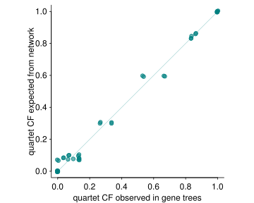
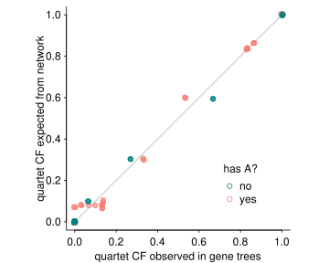

Extract Expected CFs
A good way to visualize the "goodness-of-fit" of a given estimated network to the data is to plot the observed CF versus the expected CF. If the network is a good fit, then the dots in the plot will be close to the diagonal (x=y line). The following function will create a dataframe with the observed and expected CFs, which are all saved in the DataCF object after running snaq:
julia> topologyMaxQPseudolik!(truenet, raxmlCF);
julia> df_wide = fittedQuartetCF(raxmlCF) # same as fittedQuartetCF(raxmlCF, :wide)
15×10 DataFrames.DataFrame. Omitted printing of 3 columns
│ Row │ tx1 │ tx2 │ tx3 │ tx4 │ obsCF12 │ obsCF13 │ obsCF14 │
│ │ String │ String │ String │ String │ Float64 │ Float64 │ Float64 │
├─────┼────────┼────────┼────────┼────────┼──────────┼───────────┼───────────┤
│ 1 │ A │ B │ C │ D │ 1.0 │ 0.0 │ 0.0 │
│ 2 │ A │ B │ C │ E │ 0.833333 │ 0.0333333 │ 0.133333 │
│ 3 │ A │ B │ C │ O │ 0.866667 │ 0.0 │ 0.133333 │
│ 4 │ A │ B │ D │ E │ 0.833333 │ 0.0333333 │ 0.133333 │
│ 5 │ A │ B │ D │ O │ 0.866667 │ 0.0 │ 0.133333 │
│ 6 │ A │ B │ E │ O │ 0.833333 │ 0.0666667 │ 0.1 │
│ 7 │ A │ C │ D │ E │ 0.0 │ 0.0 │ 1.0 │
│ 8 │ A │ C │ D │ O │ 0.0 │ 0.0 │ 1.0 │
│ 9 │ A │ C │ E │ O │ 0.533333 │ 0.333333 │ 0.133333 │
│ 10 │ A │ D │ E │ O │ 0.533333 │ 0.333333 │ 0.133333 │
│ 11 │ B │ C │ D │ E │ 0.0 │ 0.0 │ 1.0 │
│ 12 │ B │ C │ D │ O │ 0.0 │ 0.0 │ 1.0 │
│ 13 │ B │ C │ E │ O │ 0.666667 │ 0.266667 │ 0.0666667 │
│ 14 │ B │ D │ E │ O │ 0.666667 │ 0.266667 │ 0.0666667 │
│ 15 │ C │ D │ E │ O │ 1.0 │ 0.0 │ 0.0 │
julia> df_long = fittedQuartetCF(raxmlCF, :long)
45×7 DataFrames.DataFrame
│ Row │ tx1 │ tx2 │ tx3 │ tx4 │ quartet │ obsCF │ expCF │
│ │ String │ String │ String │ String │ String │ Float64 │ Float64 │
├─────┼────────┼────────┼────────┼────────┼─────────┼───────────┼────────────┤
│ 1 │ A │ B │ C │ D │ 12_34 │ 1.0 │ 0.999931 │
│ 2 │ A │ B │ C │ D │ 13_24 │ 0.0 │ 3.42684e-5 │
│ 3 │ A │ B │ C │ D │ 14_23 │ 0.0 │ 3.42684e-5 │
│ 4 │ A │ B │ C │ E │ 12_34 │ 0.833333 │ 0.834437 │
│ 5 │ A │ B │ C │ E │ 13_24 │ 0.0333333 │ 0.0827816 │
│ 6 │ A │ B │ C │ E │ 14_23 │ 0.133333 │ 0.0827816 │
│ 7 │ A │ B │ C │ O │ 12_34 │ 0.866667 │ 0.860858 │
⋮
│ 38 │ B │ C │ E │ O │ 13_24 │ 0.266667 │ 0.302862 │
│ 39 │ B │ C │ E │ O │ 14_23 │ 0.0666667 │ 0.100184 │
│ 40 │ B │ D │ E │ O │ 12_34 │ 0.666667 │ 0.596954 │
│ 41 │ B │ D │ E │ O │ 13_24 │ 0.266667 │ 0.302862 │
│ 42 │ B │ D │ E │ O │ 14_23 │ 0.0666667 │ 0.100184 │
│ 43 │ C │ D │ E │ O │ 12_34 │ 1.0 │ 0.999855 │
│ 44 │ C │ D │ E │ O │ 13_24 │ 0.0 │ 7.27002e-5 │
│ 45 │ C │ D │ E │ O │ 14_23 │ 0.0 │ 7.27002e-5 │It is important to have run snaq!, topologyQPseudolik! or topologyMaxQPseudolik! before making these tables, or the result would be meaningless. These functions update the fitted concordance factors (those expected under the network) inside the DataCF object raxmlCF.
Here is one way to plot them, via R again, and using the R package ggplot2.
using RCallTo install ggplot2 if not installed already, do: R"install.packages('ggplot2', dep=TRUE)"
@rlibrary ggplot2
ggplot(df_long, aes(x=:obsCF,y=:expCF)) + theme_classic() +
geom_segment(x=0,y=0,xend=1,yend=1, color="#008080", size=0.3) + # diagonal line
geom_point(alpha=0.5, color="#008080", position=position_jitter(width=0.005, height=0.005)) +
ylab("quartet CF expected from network") + xlab("quartet CF observed in gene trees") + coord_equal(ratio=1);
# if needed, save with:
ggsave("expCFs_obsvsfitted.svg", scale=1, width=6, height=5);
Many points are overlapping, so they were "jittered" a little to see them all better. There are always many points overlapping on the bottom-left corner: concordance factors of 0.0 for quartet resolutions not observed, and not expected. To export the table of quartet CFs and explore the fit of the network with other tools:
using CSV
CSV.write("fittedCF.csv", df_long)alternative code to get a similar plot with Gadfly:
using Gadfly
plot(layer(df_long, Geom.point, x="obsCF", y="expCF"),
layer(x=0:1,y=0:1, Geom.line), # diagonal line
Guide.xlabel("CF observed in gene trees"), Guide.ylabel("CF expected from network"))We could highlight quartets that include taxon A, say, if we suspect that it is an unrecognized hybrid. Many points are overlapping, like before, so they are again "jittered" a bit.
using DataFrames
df_long[:has_A] = "no" # add a column to our data, to indicate which 4-taxon sets have A or not
for r in eachrow(df_long)
if "A" ∈ [r[:tx1], r[:tx2], r[:tx3], r[:tx4]]
r[:has_A]="yes"
end
end
first(df_long, 7) # first 7 rows| tx1 | tx2 | tx3 | tx4 | quartet | obsCF | expCF | has_A | |
|---|---|---|---|---|---|---|---|---|
| String | String | String | String | String | Float64 | Float64 | String | |
| 1 | A | B | C | D | 12_34 | 1.0 | 0.999931 | yes |
| 2 | A | B | C | D | 13_24 | 0.0 | 3.42684e-5 | yes |
| 3 | A | B | C | D | 14_23 | 0.0 | 3.42684e-5 | yes |
| 4 | A | B | C | E | 12_34 | 0.833333 | 0.834437 | yes |
| 5 | A | B | C | E | 13_24 | 0.0333333 | 0.0827816 | yes |
| 6 | A | B | C | E | 14_23 | 0.133333 | 0.0827816 | yes |
| 7 | A | B | C | O | 12_34 | 0.866667 | 0.860858 | yes |
ggplot(df_long, aes(x=:obsCF, y=:expCF, color=:has_A)) + theme_classic() +
geom_segment(x=0,y=0,xend=1,yend=1, color="black", size=0.3) + # diagonal line
geom_point(alpha=0.5, position=position_jitter(width=0.005, height=0.005)) +
ylab("quartet CF expected from network") + xlab("quartet CF observed in gene trees") + coord_equal(ratio=1);
# can be saved:
ggsave("expCFs_obsvsfitted_A.svg", width=6, height=5);